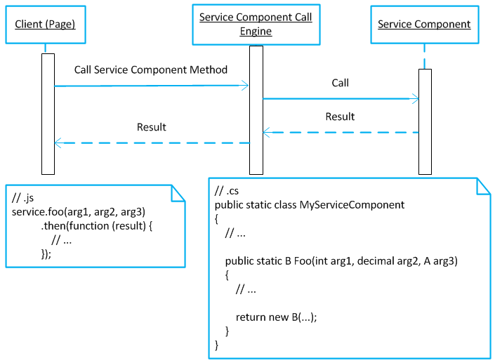

Provides some handling methods (download file, write file stream to HTTP response, script service etc.). Of course, extensions are supported.
Provides a script service execution engine.
Automatically generates JavaScript intellisense file to help code.
Minimize JavaScript code file to improve download speed.
How to Use?
Analysis
Now our system has many HTTP handlers to process multiple different requests. We can provide only one HTTP handler to process any type of requests by provide routing method. And when we want to call server method, we use different user defined protocol to design handler. So we need develop an engine to call the server method directly (all details (such as data serialization/deserialization, client asynchronous invoking & callbacks etc.) should be encapsulated).
Route Handling
There should be routing method to process different requests.
Emit Script Service
Frequent used client components should be reused easily. They can be combined to new apply by an easy method.
Call Service Method from Client
This should be straightforward from client and server.
Generate Intellisense JavaScript Code for Corresponding Service Component
Should provide a tool to generate the code to reference for intellisense.
Minimize JavaScript Code
By configurable method to minimize the code.
Design
Architecture
Package and Its Dependencies
All functions should be encapsulated into on package - GeneralHttpHandling. Its dependencies is as below:
Sub-Packages
Main sub-packages and their dependencies:
General
Handler Routing
The flow is as below:
Handler Request URL Composition
The flow is as below:
Client Call to Service Component

The call engine is responsible for:
Select service component method.
Serialize/Deserialize args & result.
Detail
Vocabulary
HandlerRouteManager
Responsible for route handler; generate handling URL.
GeneralHttpHandlerSection
Configuration section for HTTP handlers.
WorkerHandler
Worker handler that processes the request.
Route parameter: _action
HTTP method
Additional input parameters (including form data)
Determine whether support session
ScriptService
Script service modules can be easily composed to a module, then the specified task can be completed.
ServiceComponentScriptService
A script service that can call the specified service component (service component wrapper).
TypeResolver
When instantiates a worker handler or service component, if its type cannot be resolved according to .NET locating path, the consumer can use the resolver to locate the type.
ServiceComponentMethodSelector
Select appropriate method of service component to execute from the client call.
Handler Route Name Specification
JSON serialization/deserialization
Asynchronous Service Components Call
Methods overload rule
Client call mode
Client adopt Deferred/Promise pattern to call service components.
/// <reference path="SomeComponent.h.js" />
// the first function is treated as service
function main(context) {
return new MyService(context);
}
// here can write any code
function MyService(context) {
this.context = context;
}
MyService.prototype = {
context: null,
exec: function () {
}
};
int line = 3;
string result;
try
{
object returnValue = DoExecute(context, type, paramStr);
ExecutionResult wrapper = new ExecutionResult(new ReturnValueWrapper(returnValue));
result = wrapper.Serialize();
}
catch (Exception ex)
{
ExecutionResult wrapper = new ExecutionResult(new Error(ex));
result = wrapper.Serialize();
}